Para este juego necesitaremos el Pacman que tendrá varios disfraces de movimiento y de fin de partida.
También tendremos 4 fantasmas de colores con un ndisfraz más cada uno con el color violeta para cuando Pacman
se los pueda comer.
Vamos a necesitar para la pantalla de inicio una imagen y un botón.
Los puntos amarillos también serán un objeto del que realizaremos clones y los puntos naranjas más grandes
también.
Necesitaremos un mensaje de "Game Over" y tres objetos para las distintas vidas que tendremos.
Vamos a necesitar dos escenarios, uno en negro para el inicio y otro con el laberinto para el juego.
Para descargar los objetos necesarios para el juego, lo haremos desde este link. Es un archivo comprimido con 13 objetos y 2 escenarios. Lo descargaremos y lo descomprimimos en el directorio del alumno.
Vamos a empezar por poner en el escenario que al empezar coloque el fondo de inicio.
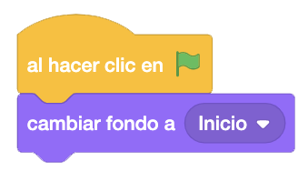
En este juego vamos a empezar por la pantalla de inicio, en lugar de añadirlo al final. Empezaremos por poner en la imagen inicial que al empezar se muestre.
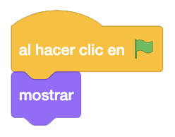
Ahora programaremos el botón, que tiene imagen de Pacman. Al empezar, le daremos el tamaño adecuado y lo
mostraremos.
Vamos hacer un pequeño efecto en el botón para que no quede tan plano. Al pasar el cursor por encima, el botón
se hará primero un poco más grande y después volverá a su tamaño original.
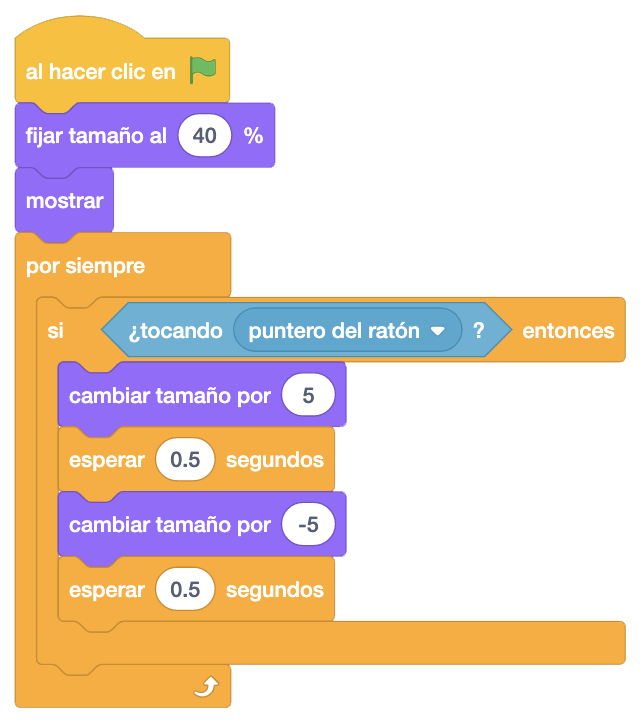
Al hacer clic en el botón, lo esconderemos y mandaremos un mensaje "Empezar" para que se inicie el juego.
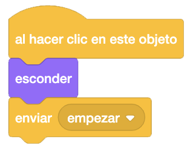
Volvemos a la imagen de inicio y programaraemos el mensaje "Empezar", que lo único que hará será ocultar el objeto.
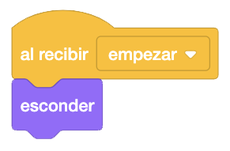
Tambien programaremos en el escenario que al recibir "Empezar" cambie el escenario al "Laberinto".

Ahora para empezar el juego pondremos los puntos amarillos. Haremos clones que iremos colocando uno a uno en
el laberinto.
Lo primero que pondremos será escon der el punto cuando se inicie el juego.
Vamos a necesitar tres variables locales que serán "_Fila" y "_Columna" con las que llevaremos la gestión de
la creación de los puntos por la pantalla, y "_Crear Clon" que nos servirá para saber si tenemos que crear el
punto en la pantalla o no, ya que hay sitios donde no tendremos que crearlos.
Esconderemos el punto, lo colocaremos en la parte superior izquierda que será donde empezemos a crear los
puntos en la pantalla e inicializaremos las variables "_Fila" y "_Columna".
Vamos a ir creando los puntos mediante dos bucles anidados que controlen uno el número de puntos por fila y
el otro el número de filas.
Por cada columna evaluaremos el espacio que tenemos que dejar entre un punto y otro. También tenemos que ir
viendo si tenemos que crear el punto en esta posición o no y finalmente si tenemos que crearlo, lo creamos.
Por cada fila iremos viendo el espacio que tenemos que dejar entre ellas, dependiendo de donde estemos.
Finalmente, una vez puestos todos los puntos, enviaremos el mensaje "Jugar" para dar inicio al juego.
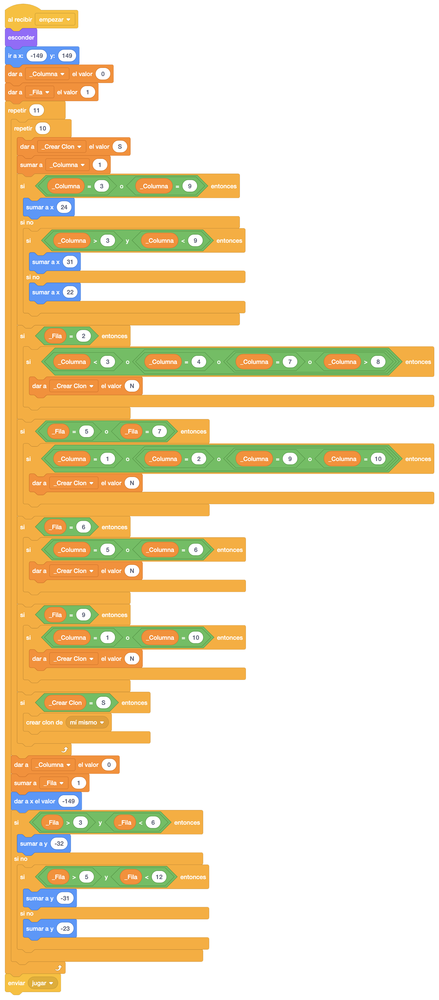
Al comenzar como clon, mostraremos cada uno de los puntos.

Debe rellenarse el laberinto de esta forma.
Vamos a crear ahora los puntos naranjas. Al hacer clic en la bandera, esconderemos el objeto.
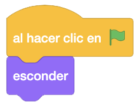
Ahora, al recibir "Empezar", colocaremos el objeto en 4 posiciones de la pantalla y crearemos 4 clones del punto naranja.
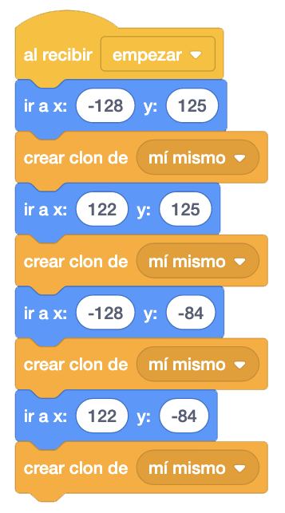
Al comenzar como clon, lo mostraremos.
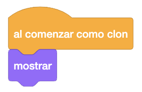
Vamos a programar por fin a nuestro protagonista, el Pacman.
Crearemos una serie de variables para su control. Las variables "Puntos" (para guardar los puntos que vayamos
consiguiendo), "Vidas" (guardaremos las vidas que tiene el Pacman) y "Pacman Muerto" (para guardar si está
muerto o no), serán variables globales, y la variable "_Dirección" (guardamos la dirección en la que se mueve)
será una variable del objeto
Lo primero que haremos será esconderlo y esconder la variable "Puntos" para que no se vea en el inicio.
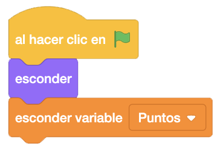
Al recibir el mensaje "Jugar", mostraremos la variable "Puntos" y le daremos el valor "0", inicializaremos la
variable "Pacman Muerto" a "N", daremos el valor 3 a "Vidas" e inicializaremos la variable "_Dirección" a
"Derecha".
Lo colocaremos en el centro del laberinto y apuntaremos a la derecha. Le pondremos el primer disfraz (el de la
boca abierta), lo mandamos a la capa delantera y lo mostramos.
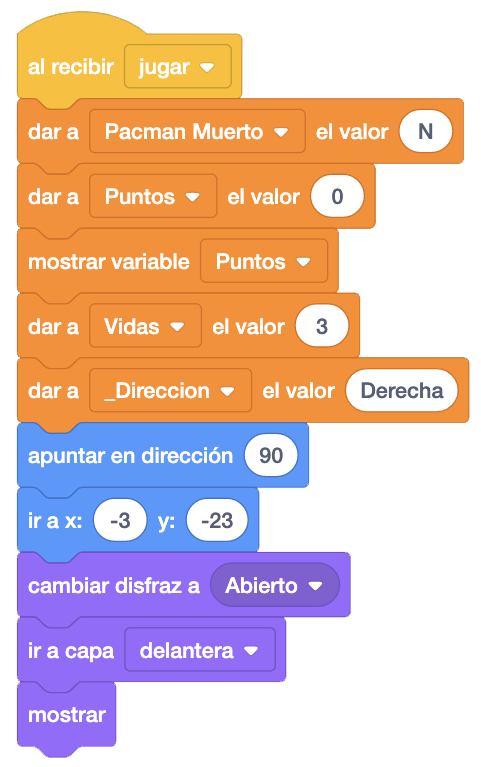
Una vez colocado, volveremos a poner otro evento al recibir el mensaje "Jugar" donde estaremos poniendo el sonido del juego hasta que termine, una y otra vez.
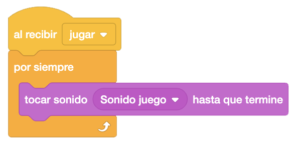
Vamos a programar el movimiento del Pacman, que deberá de moverse solo hasta que choque con las paredes
azules. Nosotros solo podremos cambiarle de dirección.
Al recibir el mensaje "Jugar", nos moveremos dependiendo de la variable "_Dirección", sumando o restando "1"
al eje "X" o al "Y" dependiendo de esa dirección.
Este movimiento solo lo haremos si no estamos muertos y no estamos tocando el color azul de las paredes del
laberinto.
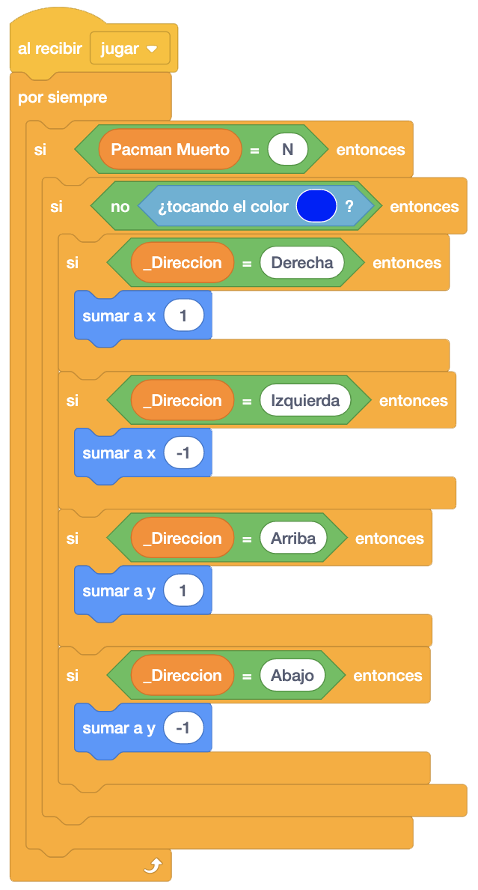
Ahora programaremos que podamos girar el Pacman con los cursores.
Para ello, en el evento anterior, programaremos que si tocamos cualquiera de los cursores, llamaremos a un
nuevo bloque "TeclaPulsada", donde programaremos lo necesario.
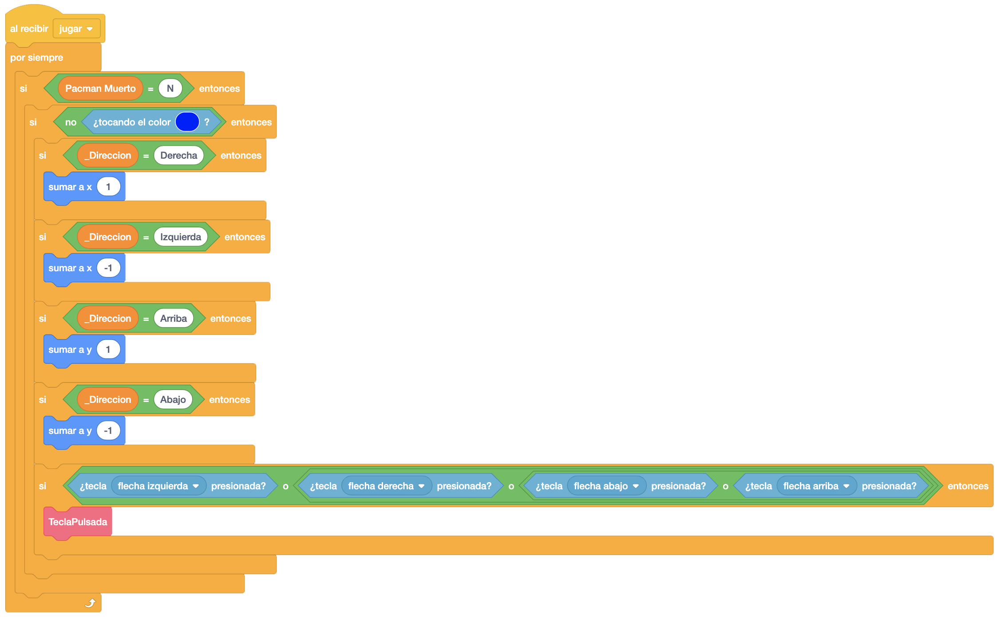
En el bloque "TeclaPulsada" (hemos pulsado alguno de los cursores), programaremos que si el Pacman está
tocando el color azul, retrocedemos un paso en la dirección contraria en la que estuviera moviéndose.
Este control también lo haremos en un nuevo bloque al que llamaremos "RetrocederPaso".
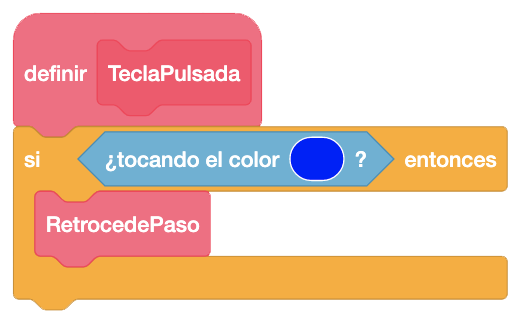
En el bloque "RetrocederPaso", dependiendo de la dirección en la que se movía el Pacman, retrocederemos un paso.
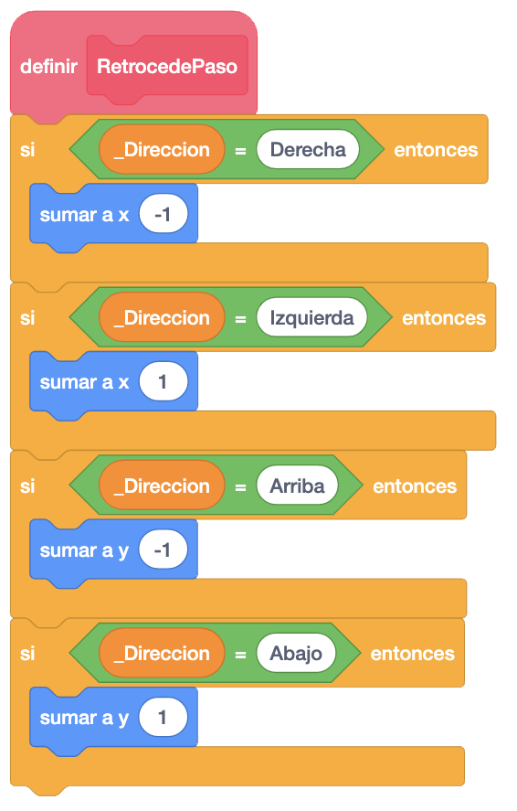
Volveremos al bloque "TeclaPulsada" donde evaluaremos qué tecla hemos pulsado y dependiendo de la dirección, guardaremos en la variable "_Dirección" la dirección hacia donde le hemos dado, apuntando también a esa dirección.
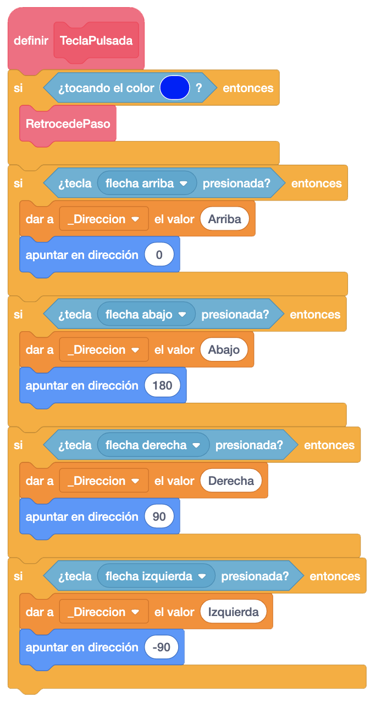
Ahora controlaremos que si se sale del laberinto por la parte izquierda, aparezca por la derecha y viceversa.
Volveremos al evento donde movemos al Pacman y controlaremos por posición si se sale del laberinto para
recolocarlo en el otro lado.
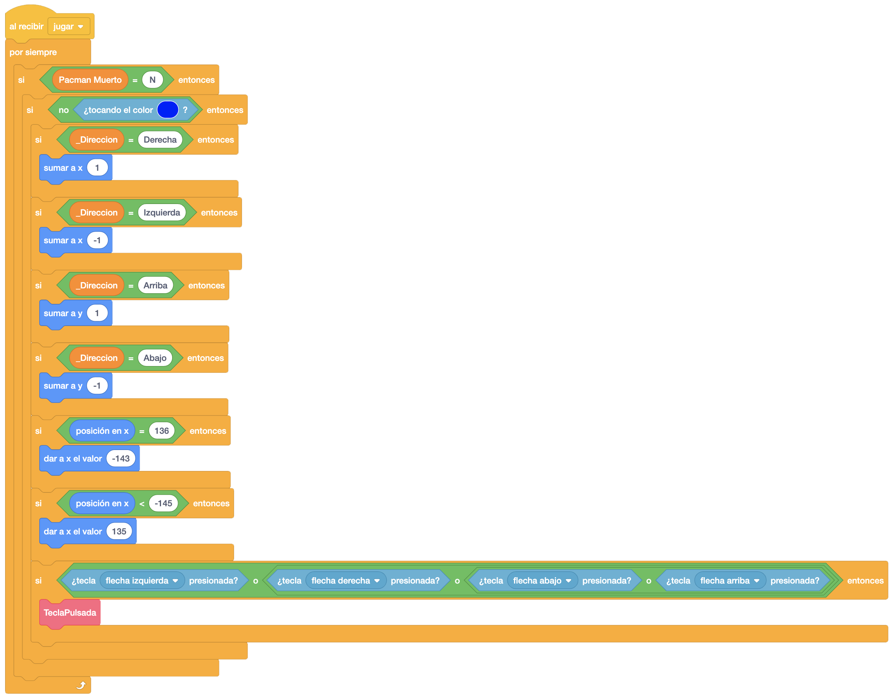
Ahora vamos a ir moviendo la boca según nos movemos. Crearemos otro evento en el que al recibir el mensaje "Jugar" y continuamente cambiaremos entre los disfraces de boca abierta y de boca cerrada, esperando un tiempo entre ambos. Haremos esto siempre que el Pacman no esté muerto.
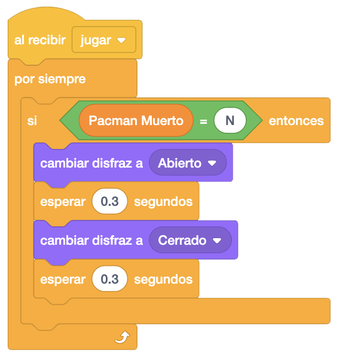
El juego irá quedando de esta manera.
A continuación, nos comeremos los puntos amarillos. Para ello, volveremos al objeto del punto amarillo, y donde teníamos que al empezar como clon, lo mostrábamos, vamos a añadir que evalúe continuamente que si tocamos el Pacman, iniciaremos el sonido de comer el Pacman, sumaremos 1 a los puntos y eliminaremos el clon del punto amarillo.
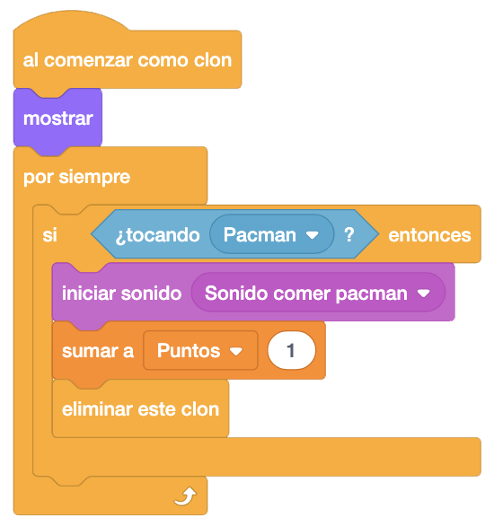
Es hora de los fantasmas. Vamos a empezar por uno de ellos y lo primero que haremos será esconderlo.
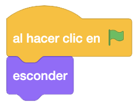
Crearemos una variable "_Dirección_Fantasma1" que será local y donde guardaremos la dirección que lleve el
fantasma en cada momento.
Ahora, al recibir el mensaje "Jugar", inicializaremos la variable "_Dirección_Fantasma1" que pondremos a 1
(1-derecha, 2-Izquierda, 3-Arriba y 4-Abajo).
Además, le colocaremos en un punto del laberinto, le mandaremos a la capa delantera, le pondremos el disfraz
de su color, apuntaremos a la derecha y lo mostraremos.
Para mover al fantasma, vamos a evaluar continuamente si está tocando las paredes azules del laberinto y si
es así, llamaremos a un nuevo bloque "Retroceder Paso" que programaremos más adelante.
Si no estamos tocando las paredes azules, dependiendo de la dirección del fantasma apuntaremos en esa
dirección y lo moveremos.
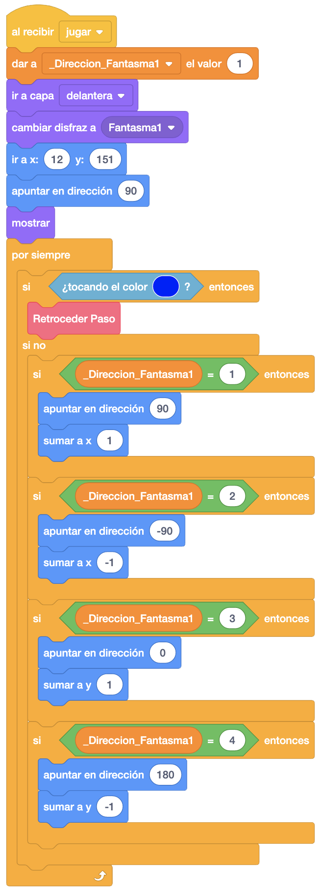
En el bloque "Retroceder Paso", si tocamos la pared azul, programaremnos que dependiendo de la dirección
retrocederemos un paso atrás y calculamos una nueva dirección aleatóriamente.
Esto se hace para que antes de cambiar de dirección, deje de tocar la pared azul, igual que en el Pacman.
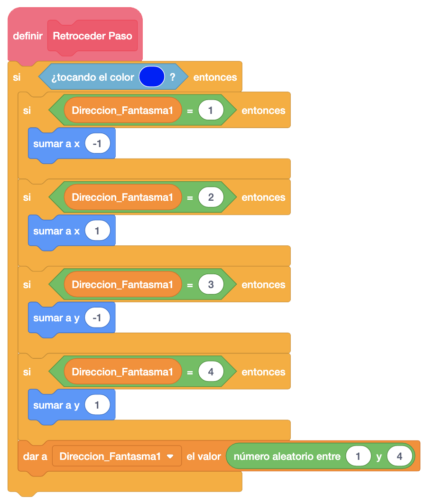
Vamos a programar ahora que al comernos los puntos naranjas, los fantasmas cambien de color.
Para ello, iremos de nuevo al punto naranja y donde teníamos que al comenzar como clon se mostrara, añadiremos
que controle continiuamente que si está tocando al Pacman, envíe un mensaje de "Cambiar Color Fantasma" y
elimine el clon del punto naranja.
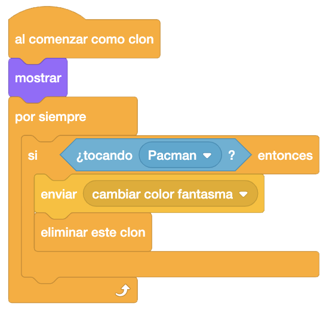
Ahora volveremos al fantasma y programaremos que al recibir el mensaje "Cambiar Color Fantasma", cambiaremos al disfraz del color violeta durante unos segundos, volviendo al disfraz del color cuando pase este tiempo.
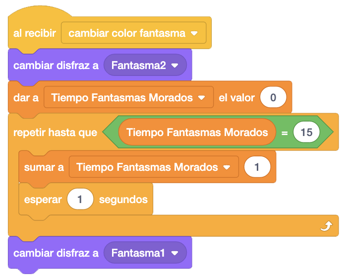
El juego de momento funcionará así.
Vamos aprogramar ahora que el Pacman se pueda comer a los fantasmas o viceversa. Empezaremos por programar en
que el fantasma que al recibir el mensaje "Jugar" evaluemos contínuamente si tocamos al Pacman.
En el caso de que así sea, miraremos qué numero de disfraz tiene el fantasma. Si tiene el disfraz de su color
(le come el fantasma al Pacman), enviaremos un mensaje "Vida Menos" para quitarle una vida y que programaremos
en el Pacman.
Si tuviera el disfraz violeta (el Pacman se come al fantasma), iniciamos el sonido de que nos comemos al
fantasma, lo deslizamos hasta la celda del centro del laberinto, le dejamos el disfraz original y le damos al
fantasma la dirección a la derecha.
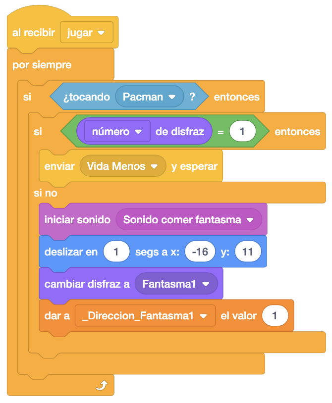
Ahora programaremos en el Pacman que al recibir el mensaje "Vida Menos", daremos ala variable "Pacman Muerto"
el valor "S" para bloquear el movimiento y demás.
Iniciamos el sonido de quitarle una vida al Pacman y le quitaremos una vida a la variuable "Vidas".
Le cambiaremnos a los 4 disfraces de ir desapareciendo poco a poco y evualremos si nos quedan vidas o no.
Si no nos quedan vidas, escondemos el Pacman. En caso contrario, lo volveremos a poner en su sitio de salida
en el centro del laberinto.
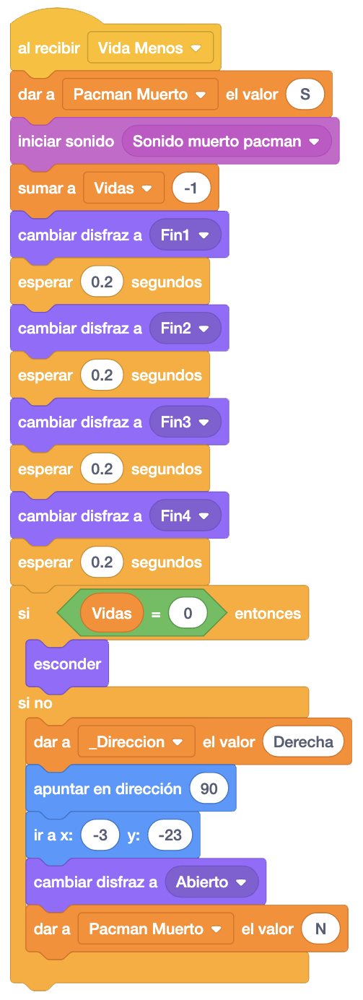
También lo esconderemos cuando llegue al final del juego. Para ello, pondremos que al recibir el mensaje jugar, evaluaremos continuamente si hemos llegado al tope de puntos, y si es así, lo esconderemos.
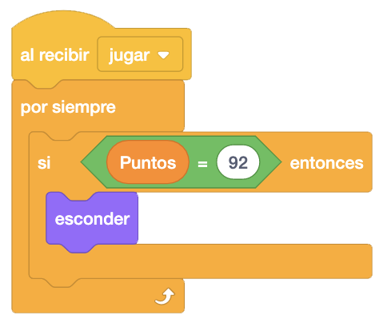
Para terminar con el fantasma, cuando no queden vidas o lleguemos a la máxima puntuación, lo ocultare mos y detendremos todos los programas del objeto.
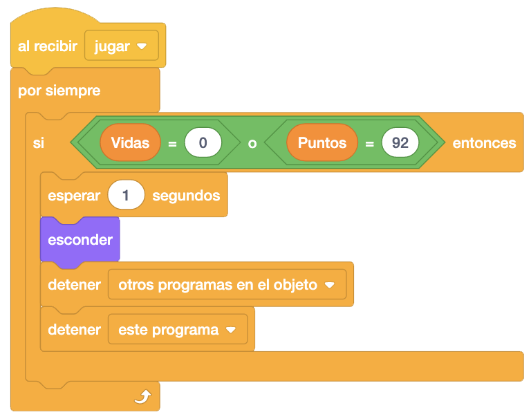
Pondremos y programaremos ahora el objeto de Game Over. Al empezar lo colocaremos en la pantalla y lo esconderemos como el resto de objetos.
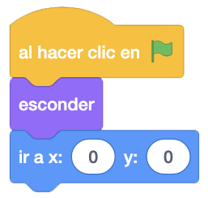
Al recibir el mensaje "Jugar", controlaremos continuamente si ha llegado al final (no me quedan vidas o llego a la máxima puntuación) para mostrar el objeto y detener todos los objetos.
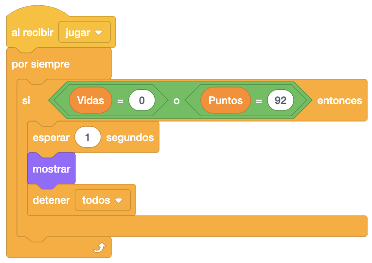
Aunque hayamos parado todo, para programar que se reinicie el juego, podemos hacerlo con un bloque de "Al Hacer Clic En Este Objeto" donde mandaremos un mensaje "Empezar para que vuelva a pintar los puntos y demás y empiece de nuevo el juego.
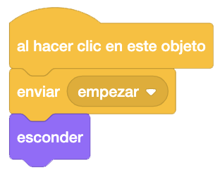
Vamos a crear ahora el resto de fantasmas. Para ello solo tenemos que copiar todo el código del fantasma 1 al
fantasma 2, al 3 y al 4.
En cada uno de los fantasmas renombraremos la variable "_Dirección_Fantasma1" a "_Dirección_FantasmaX" donde
"X" es el número del fantasma.
También colocaremnos cada fantasma en la posición que queramos.
Lo último que nos queda esd poner las vidas visibles. Para ello, pondremos tres Pacman que representará cada
uno una vida.
En los tres, lo que haremos al principio será esconderlos y colocarlos en su sitio.
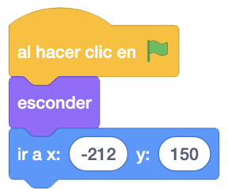
Al recibir el mensaje "Jugar", controlaremos continuamente el número de vidas. Si nos quedan 2 vidas escondemos uno de los Pacman, si nos queda una vida escondemos otro de ellos y si no nos quedan vidas, escondemos el último.
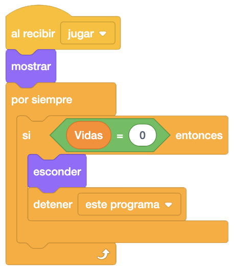
Con esto daremos por terminado el juego.
Algunos retos que podemos añadir al juego son que cuando empecemos y vayamos a la pantalla del laberinto,
esté ya relleno con los puntos y bno se vea como se construye.
También podríamos añadir frutas que fueran saliendo por el laberinto durante un tiempo y que l cogerlas, nos
diera puntos o vidas.
Y el juego quedaría así.
Para ver el juego terminado pulsa
aquí.
Para descargarte el juego terminado pulsa
aquí.